FLOWLINE · Phase 4.7 actual browser evidence
Every image is an actual native-size browser capture of real engine gameplay. Animated WebP files assemble those same captured frames at approximate recorded intervals, with review pauses at the ends. No interpolated or generated frames, resizing, mock interactions or attached audio. This is sampled screenshot playback, not a continuous 60fps screen recording.
Motion diagnosis: both system and stored reduced motion are on here. Production correctly settles immediately. Full-travel evidence uses the intentional, session-only research-lab override with the same renderer, input, immutable engine and feedback service. Production preferences are preserved.
Play the shared-renderer lab · Production game · Detailed handoff · Native image audit
390×844 · Follow the same tail through its bends
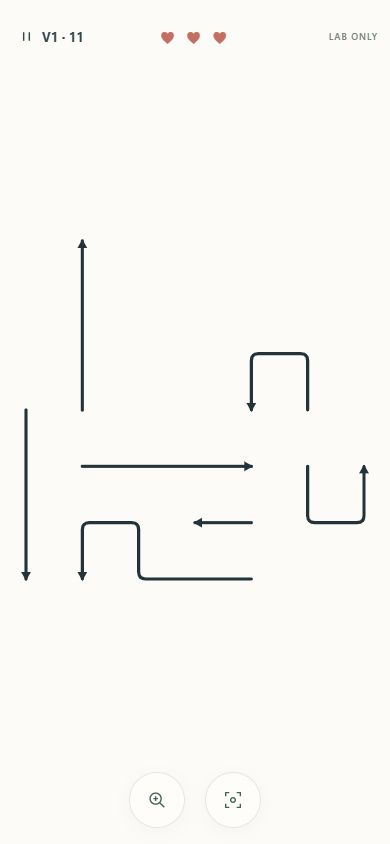
Level 11 · 390×844 · 3 bends · stationary → winding departure → progressive dots → removal → fade. Raw timestamps: v1-390-fast.json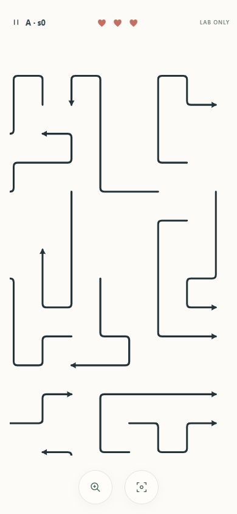
A · 44 paths · 390×844 · 2.25× · 4 bends · stationary → winding departure → progressive dots → removal → fade. Raw timestamps: A-390-working-fast.json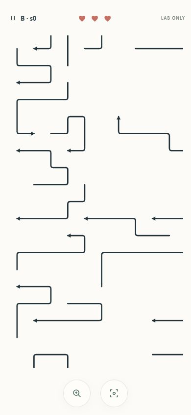
B · 66 paths · 390×844 · 2.25× · 3 bends · stationary → winding departure → progressive dots → removal → fade. Raw timestamps: B-390-working-fast.jsonAnnotated milestones · A, arrow 021
The original tail runs left, up, right, down, then right. Look at the upper-right teal path. Its tail follows each source turn while its head advances right. Dots occupy only the vacated centerline. Images below are unaltered; annotations are these captions.
1 · Original stationary winding path.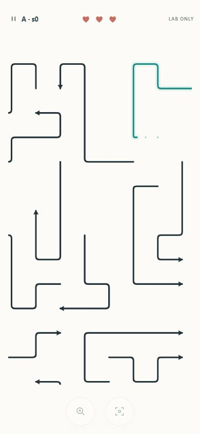
2 · Tail reaches the original lower-left turn; dots occupy the first vacated segment.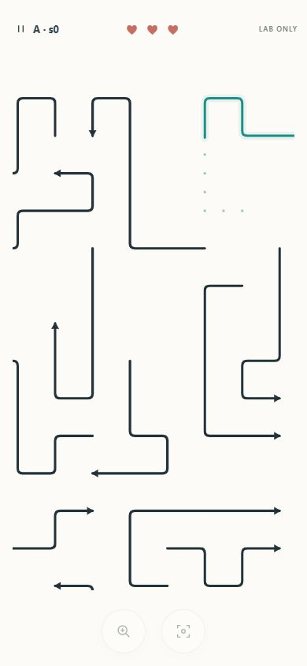
3 · Tail continues up the original path toward its upper turns.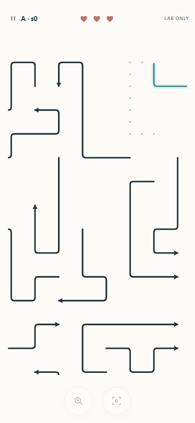
4 · Tail has negotiated more original turns; the dot trace extends behind it.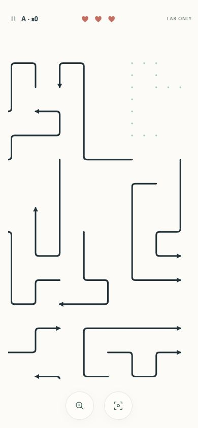
5 · Engine has removed the path; original dotted source fades.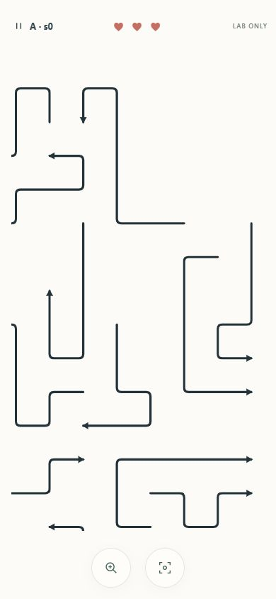
6 · Clean end state; dots are gone. Hold → truthful first-blocker ruler → release
A/seed 0: arrow 034 points left, and arrow 037 is the real first blocker. Coral contact cross and faded unreachable lane are visual only. Before, during and after: 44 paths, three hearts, zero attempts. Production Level 11 shows the same no-penalty behavior.
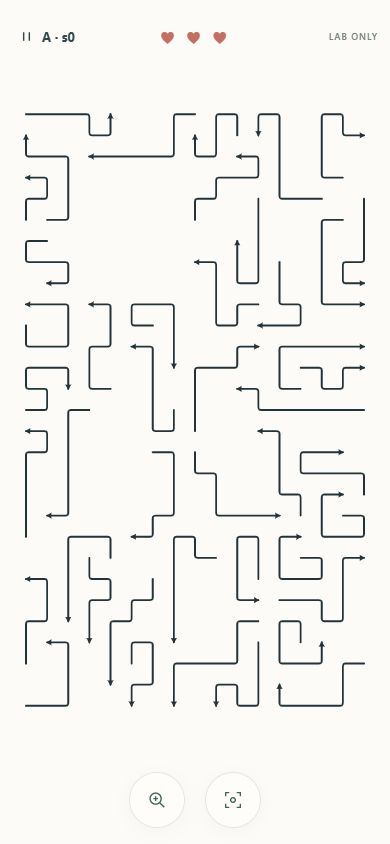
Before · 44 paths / 3 hearts / 0 attempts.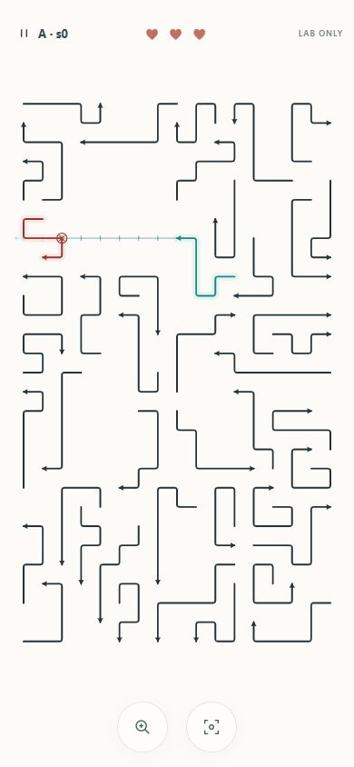
Held · full selected shape, ruler and actual first contact. Released · preview gone; counters unchanged.
Released · preview gone; counters unchanged.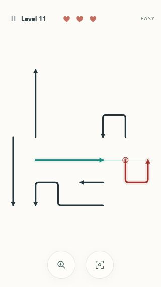
Production 320×568 · arrow 003 previews actual blocker 004. No audio context or move is created.320×568 · Same real rules and motion
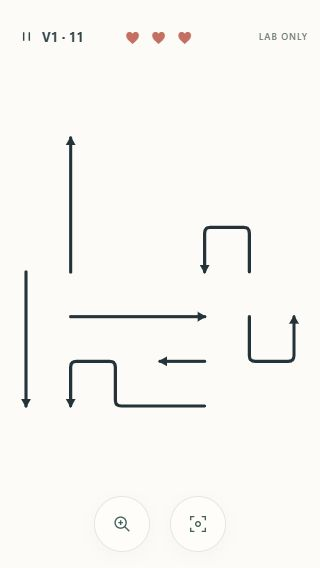
Level 11 · 320×568 · 3 bends · no stretching, real pan/zoom, finite dots.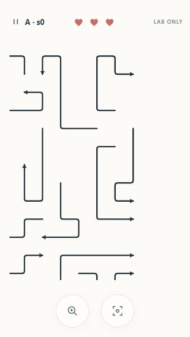
A · 44 paths · 320×568 · 2.25× · 4 bends · no stretching, real pan/zoom, finite dots.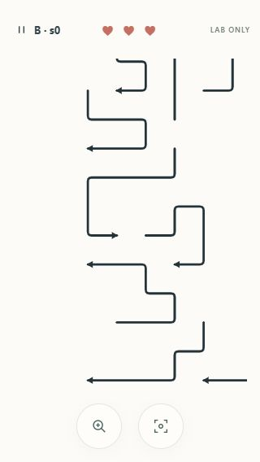
B · 66 paths · 320×568 · 3.375× · 3 bends · no stretching, real pan/zoom, finite dots.844×390 · Landscape working views
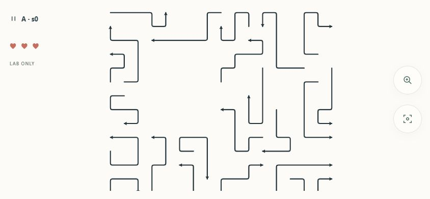
A · 844×390 · 2.25× · 4 bends · HUD and controls stay outside the safe drawing area.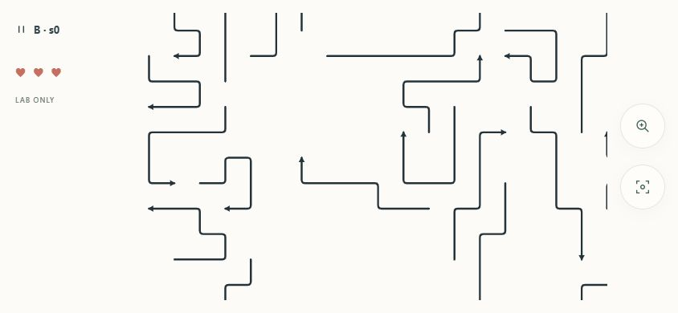
B · 844×390 · 3.375× · 3 bends · HUD and controls stay outside the safe drawing area.Measured captured runs
| Case | Duration / elapsed ms | Frames / max gap ms | CPU draw p95 / maximum ms |
|---|
| Level 11 · 390×844 · 3 bends | 476.369 / 483.300 | 30 / 16.900 | 0.30 / 0.300 |
| A · 44 paths · 390×844 · 2.25× · 4 bends | 504.795 / 501.200 | 25 / 67.400 | 2.60 / 3.000 |
| B · 66 paths · 390×844 · 2.25× · 3 bends | 477.493 / 483.700 | 30 / 17.300 | 0.50 / 1.000 |
| Level 11 · 320×568 · 3 bends | 468.048 / 473.400 | 30 / 17.300 | 0.30 / 0.300 |
| A · 44 paths · 320×568 · 2.25× · 4 bends | 524.772 / 530.400 | 33 / 17.300 | 0.40 / 2.800 |
| B · 66 paths · 320×568 · 3.375× · 3 bends | 493.677 / 500.200 | 31 / 17.200 | 0.50 / 26.500 |
| A · 844×390 · 2.25× · 4 bends | 556.719 / 562.900 | 35 / 17.200 | 0.40 / 0.600 |
| B · 844×390 · 3.375× · 3 bends | 516.436 / 531.000 | 33 / 17.200 | 0.50 / 2.400 |
Desktop browser only. CPU costs exclude compositor/input/audio/device overhead; maximum draw covers that whole installed sample, including pan/hold. One B small-phone draw reached 26.5ms. The A working capture had a 67.4ms maximum gap; an earlier heavily instrumented A overview capture had a 190ms gap (A-390-motion.json). These recording costs are retained, not hidden. Separate no-frame-capture measurements are in QUIET_MOTION_RUNS.json. Physical Android motion, multitouch, audible quality and vibration strength remain unverified. Read-only pixel probes in PIXEL_TRAIL_PROGRESSION.json show the dark-teal body vacating its source and pale dots appearing then fading. Dot detection uses brightness at the isolated source centers and excludes nearby dark ink/body; JPEG subsampling desaturates tiny dots, and faint/antialiased dots can fall below the threshold. Light pixels around body edges are explicitly not counted as dots.
Genuine terminal states and mute
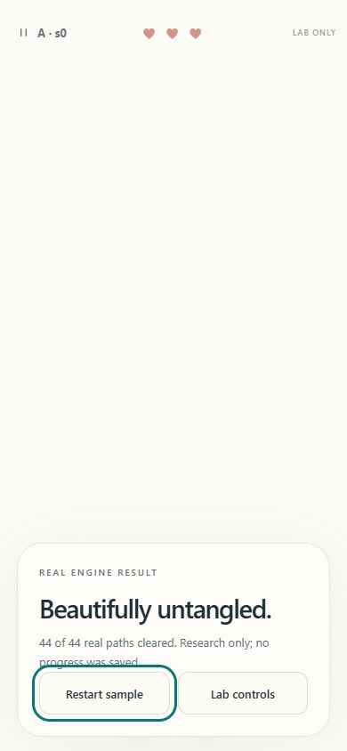
44 real legal exits · Challenge victory with all three hearts; victory synthesis event verified running.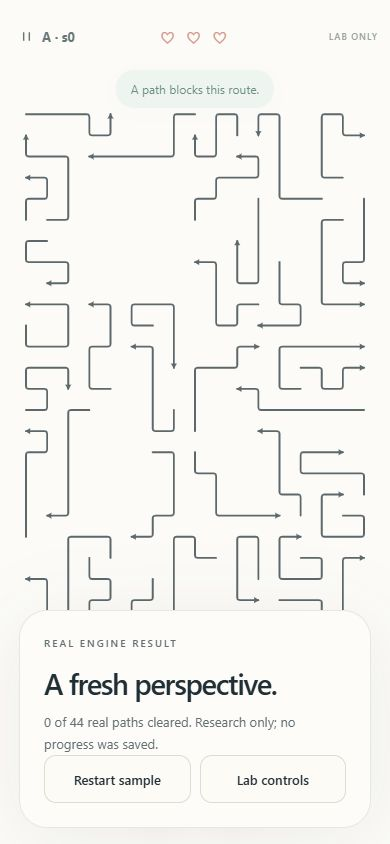
Three real blocked taps · genuine Challenge defeat. Zen retains unlimited retries.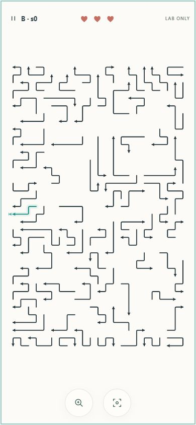
85-path board · keyboard preview makes zero attempts. Escape dismisses; Enter then clears exactly one path while muted.Raw checks: production hold/block/reduced extraction · 85-path mute/keyboard · pause cancellation · victory audio · layout matrix